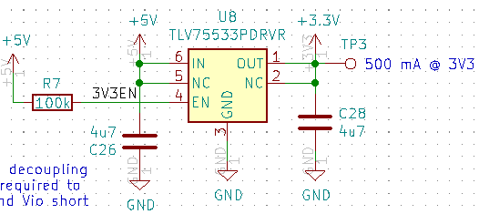
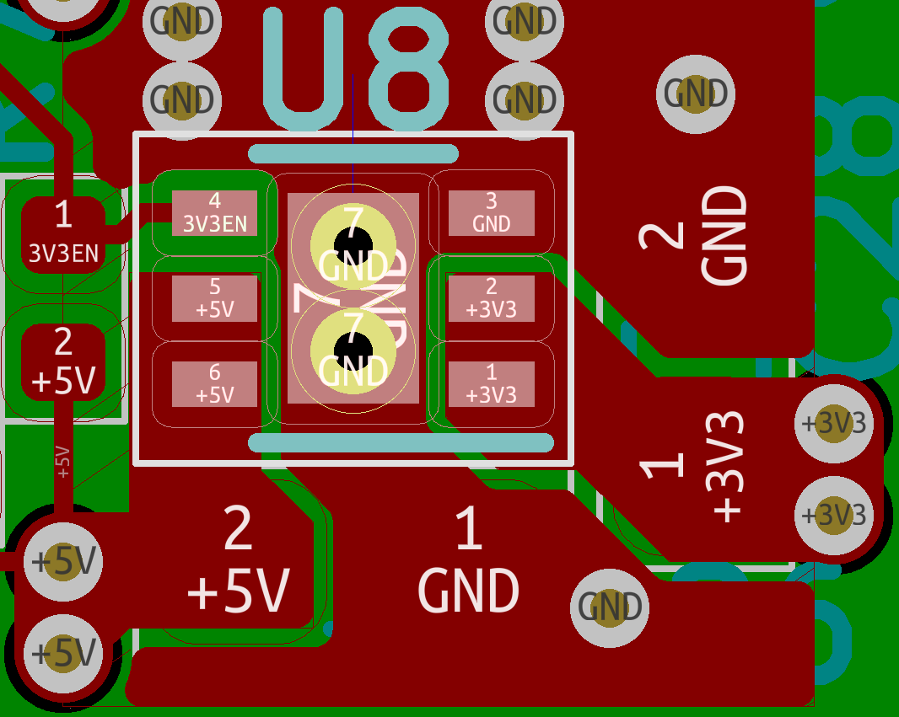

<html><head><title>TLV75533PDRVR KiCAD Data</title></head></html>
<body>

<h1>TLV75533PDRVR KiCAD Data</h1>

<p>
KiCAD data management methods interact with the library implementation.
This example shows some of the KiCAD design decisions that may create challenges.
</p>

<h3>The Component</h3>
<p>
The KiCAD component is in kicad_dcm.txt, and it has the description and datasheet URL.
The datasheets links are hard to maintain this way. 
Copying them to the design would help. The challenge is that KiCAD doesn't provide
a web server for them. Can file-based URLs be used in a relative way?
Or do they have a problem when moving the design?
</p>
<pre>
$CMP TLV75509PDRVR
D 500 mA Low Dropout Voltage Regulator, Fixed Output 0.9V, WSON6
K 500mA LDO Regulator Fixed Positive
F http://www.ti.com/lit/ds/symlink/tlv755p.pdf
$ENDCMP
</pre>

<h3>The Symbol</h3>
<p>
The symbol points directly to the package on the F2 line.
This makes symbol re-use more of a challenge.
</p>
<p>
Note that pin 7 is stacked on top of pin 3.
From a CAD point of view, this is an innovative approach.
</p>
<pre>
DEF TLV75509PDRVR U 0 10 Y Y 1 F N
F0 "U" -150 225 50 H V C CNN
F1 "TLV75509PDRVR" 0 225 50 H V L CNN
F2 "Package_DFN_QFN:DFN-6-1EP_2x2mm_P0.65mm_EP1x1.6mm" 0 325 50 H I C CIN
F3 "" 0 50 50 H I C CNN
ALIAS TLV75510PDRVR TLV75512PDRVR TLV75515PDRVR TLV75518PDRVR TLV75519PDRVR TLV75525PDRVR TLV75528PDRVR TLV75529PDRVR TLV75530PDRVR TLV75533PDRVR TLV73310PQDRVRQ1 TLV73311PQDRVRQ1 TLV73312PQDRVRQ1 TLV73315PQDRVRQ1 TLV73318PQDRVRQ1 TLV73325PQDRVRQ1 TLV73328PQDRVRQ1 TLV73333PQDRVRQ1 TLV75709PDRVR TLV75710PDRVR TLV75712PDRVR TLV75715PDRVR TLV75718PDRVR TLV75719PDRVR TLV75725PDRVR TLV75728PDRVR TLV75730PDRVR TLV75733PDRVR TLV75740PDRVR
$FPLIST
 DFN*1EP*2x2mm*P0.65mm*
$ENDFPLIST
DRAW
S -200 175 200 -200 0 1 10 f
X OUT 1 300 100 100 L 50 50 1 1 w
X NC 2 300 0 100 L 50 50 1 1 P
X GND 3 0 -300 100 U 50 50 1 1 W
X EN 4 -300 -100 100 R 50 50 1 1 I
X NC 5 -300 0 100 R 50 50 1 1 P
X IN 6 -300 100 100 R 50 50 1 1 W
X GND 7 0 -300 100 U 50 50 1 1 W N
ENDDRAW
ENDDEF
</pre>
<BR/>

<h3>The Footprint</h3>
<p>
The footprint points to the system library for its 3D representation.
This makes the footprint less portable between versions, since the library may be of a different version. <BR />
Here is the footprint:
</p>
<pre>
(module DFN-6-1EP_2x2mm_P0.65mm_EP1x1.6mm_ThermalVias (layer F.Cu) (tedit 5CC07AFF)
  (descr "6-Lead Plastic Dual Flat, No Lead Package (MA) - 2x2x0.9 mm Body [DFN] (see Microchip Packaging Specification 00000049BS.pdf)")
  (tags "DFN 0.65")
  (attr smd)
  (fp_text reference REF** (at 0 -2.025) (layer F.SilkS)
    (effects (font (size 1 1) (thickness 0.15)))
  )
  (fp_text value DFN-6-1EP_2x2mm_P0.65mm_EP1x1.6mm_ThermalVias (at 0 2.025) (layer F.Fab)
    (effects (font (size 1 1) (thickness 0.15)))
  )
  (fp_line (start -1.45 -1.1) (end 0.725 -1.1) (layer F.SilkS) (width 0.15))
  (fp_line (start -0.725 1.1) (end 0.725 1.1) (layer F.SilkS) (width 0.15))
  (fp_line (start -1.65 1.25) (end 1.65 1.25) (layer F.CrtYd) (width 0.05))
  (fp_line (start -1.65 -1.25) (end 1.65 -1.25) (layer F.CrtYd) (width 0.05))
  (fp_line (start 1.65 -1.25) (end 1.65 1.25) (layer F.CrtYd) (width 0.05))
  (fp_line (start -1.65 -1.25) (end -1.65 1.25) (layer F.CrtYd) (width 0.05))
  (fp_line (start -1 0) (end 0 -1) (layer F.Fab) (width 0.15))
  (fp_line (start -1 1) (end -1 0) (layer F.Fab) (width 0.15))
  (fp_line (start 1 1) (end -1 1) (layer F.Fab) (width 0.15))
  (fp_line (start 1 -1) (end 1 1) (layer F.Fab) (width 0.15))
  (fp_line (start 0 -1) (end 1 -1) (layer F.Fab) (width 0.15))
  (fp_text user %R (at 0 0) (layer F.Fab)
    (effects (font (size 0.5 0.5) (thickness 0.075)))
  )
  (pad "" smd rect (at 0 0.4) (size 0.82 0.63) (layers F.Paste))
  (pad "" smd rect (at 0 -0.4) (size 0.82 0.63) (layers F.Paste))
  (pad 7 smd rect (at 0 0) (size 1 1.6) (layers F.Cu F.Mask))
  (pad 6 smd rect (at 1.05 -0.65) (size 0.65 0.35) (layers F.Cu F.Paste F.Mask))
  (pad 5 smd rect (at 1.05 0) (size 0.65 0.35) (layers F.Cu F.Paste F.Mask))
  (pad 4 smd rect (at 1.05 0.65) (size 0.65 0.35) (layers F.Cu F.Paste F.Mask))
  (pad 3 smd rect (at -1.05 0.65) (size 0.65 0.35) (layers F.Cu F.Paste F.Mask))
  (pad 2 smd rect (at -1.05 0) (size 0.65 0.35) (layers F.Cu F.Paste F.Mask))
  (pad 1 smd rect (at -1.05 -0.65) (size 0.65 0.35) (layers F.Cu F.Paste F.Mask))
  (pad 7 thru_hole circle (at 0 -0.4) (size 0.65 0.65) (drill 0.3) (layers *.Cu))
  (pad 7 thru_hole circle (at 0 0.4) (size 0.65 0.65) (drill 0.3) (layers *.Cu))
  (pad 7 smd rect (at 0 0) (size 1 1.6) (layers B.Cu))
  (model ${KISYS3DMOD}/Package_DFN_QFN.3dshapes/DFN-6-1EP_2x2mm_P0.65mm_EP1x1.6mm.wrl
    (at (xyz 0 0 0))
    (scale (xyz 1 1 1))
    (rotate (xyz 0 0 0))
  )
)
</pre>
<br/>

</body></html>
